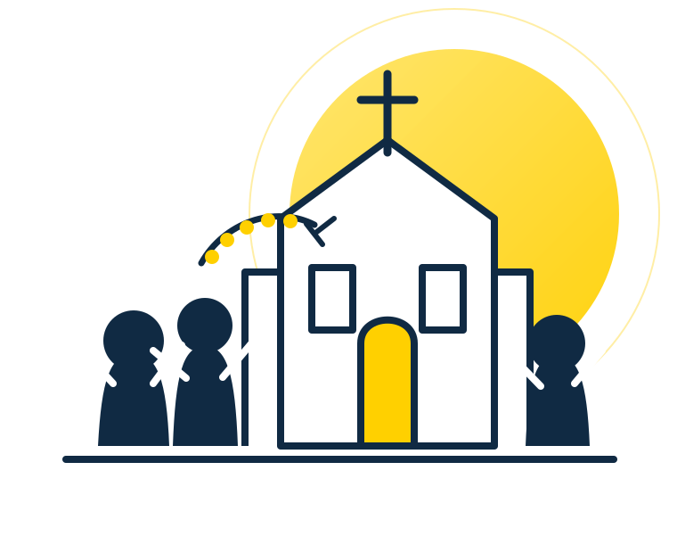

A Igreja Católica
Origem, missão, características e sacramentos.
Entrar nesta parteConheça a Igreja Católica, aprenda a rezar o Terço, entenda a castidade e descubra sua vocação sem linguagem complicada.

Cada conteúdo fica em sua própria página. Você pode estudar no seu ritmo e acompanhar o progresso.
Origem, missão, características e sacramentos.
Entrar nesta partePasso a passo, mistérios e sentido da oração.
Aprender a rezarAfetividade, limites, liberdade e amor verdadeiro.
Entender melhorComo reconhecer e responder ao chamado de Deus.
Discernir a vocaçãoVá por etapas. Leia, reze, faça perguntas e leve o que aprendeu para a vida.
Entender o que a Igreja ensina e por quê.
Criar intimidade com Deus, mesmo começando com pouco tempo.
Viver a Missa, os sacramentos e a comunidade.
Colocar seus dons a serviço da Igreja e das pessoas.
Mostrar a fé por atitudes, sem precisar fingir perfeição.
A fé não tem medo de perguntas. Buscar respostas faz parte do amadurecimento.
Não. A caminhada começa com abertura e vontade de aprender. A formação acontece aos poucos.
Sim. A oração não depende apenas de emoção. A fidelidade também é uma forma de amor.
Não necessariamente. Dúvidas honestas podem levar a uma fé mais consciente e madura.
Com coerência, respeito, cuidado com o que você consome e coragem para não seguir tudo o que o grupo faz.
Marque cada missão concluída. O site salva seu progresso.